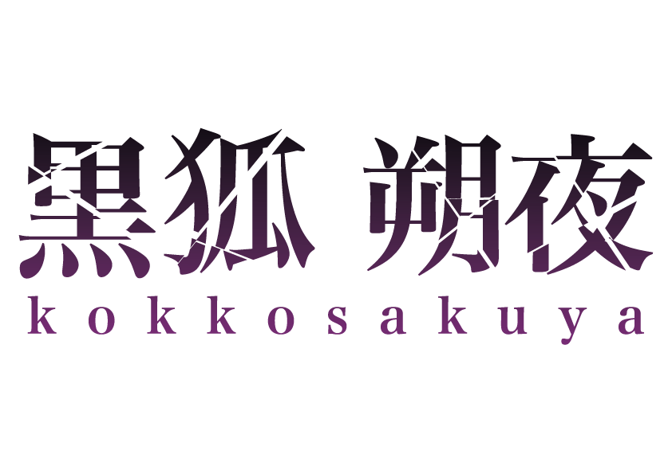
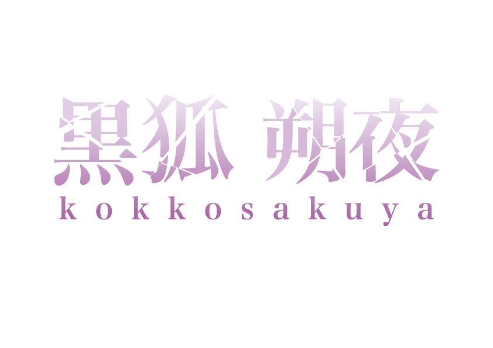

01 / WORK DETAIL
← logoの一覧に戻る
黒狐 朔夜
全体的にクールな立ち絵が多かったのでかっこよく仕上げました。参考で和風な立ち絵を頂いたので刀で切ったようなデザインにしました。色は名前や立ち絵のメインカラーの黒とサブカラーの紫を使いました。背景によって変えられるように白文字も作りました
活動者本人のX ↗← logoの一覧に戻る


全体的にクールな立ち絵が多かったのでかっこよく仕上げました。参考で和風な立ち絵を頂いたので刀で切ったようなデザインにしました。色は名前や立ち絵のメインカラーの黒とサブカラーの紫を使いました。背景によって変えられるように白文字も作りました
活動者本人のX ↗お名前の月と燗の字から連想される火を入れました。色合いは立ち絵を元にさせていただき、全体的にポップな雰囲気に仕上げました。
活動者本人のX ↗